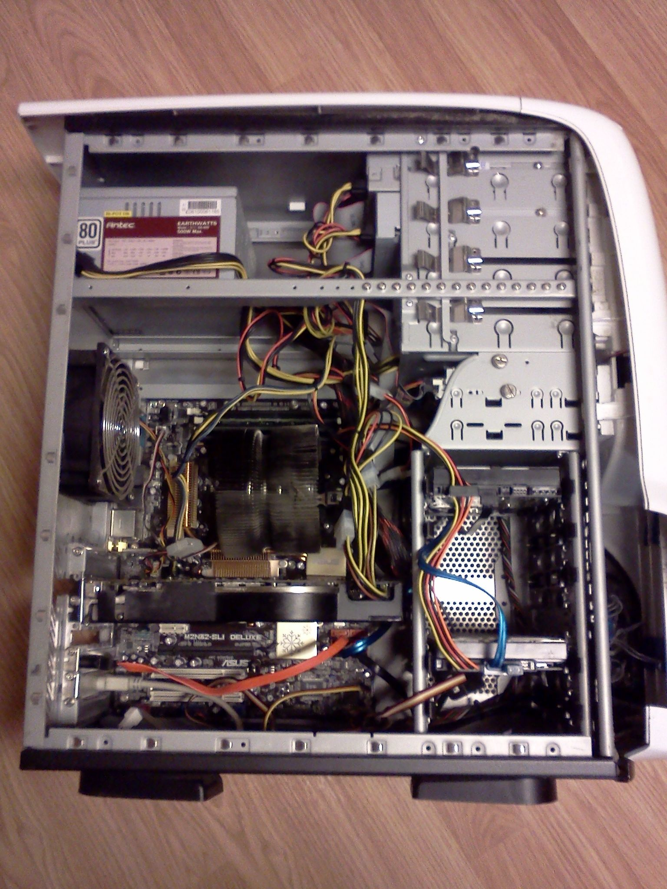

A számítógép teljesítményét alapvetően a CPU és belső busz sebessége (a belső kommunikáció sebessége), a RAM mérete és típusa, a merevlemez sebessége és kapacitása határozza meg. A gyakorlatban a CPU és a memória az alaplapon helyezkedik el. Az alaplap egy többrétegű nyomtatott áramköri lap, amelyen különbözp méretű és alakú csatlakozók helyezkednek el, melyek biztosítják az összeköttetést a hardvereszközök és a processzor között.
